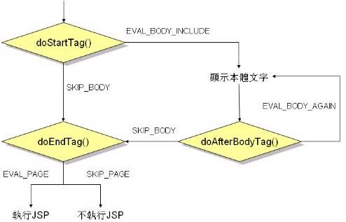

如果在自订标签库时，并不需要对标签本体作处理，则您可以继承TagSupport类别，TagSupport类别实作了Tag与 IterationTag接口，IterationTag接口则是Tag接口的子接口，TagSupport类别替您预先实作了这两个界面中的方法，在继承TagSupport之后，您视需要来改写当中的一些方法（这是 Default Adapter模式）。
Tag接口中与卷标处相关的方法主要有：doStartTag()、doEndTag()。其中doStartTag()方法是遇到标签开始时会呼叫的方法，其合法的回传值是EVAL_BODY_INCLUDE与SKIP_BODY，前者表示将显示卷标间的本体文字，后者表示不显示卷标间的本体文字；doEndTag()方法是在遇到标签结束时呼叫的方法，其合法的回传值是EVAL_PAGE与SKIP_PAGE，传回前者表示处理完标签后继承执行以下JSP网页，传回后者则表示不处理接下来的JSP网页。
IterationTag接口继承Tag接口，在卷标处理上增加了doAfterBody()，这个方法是在显示完卷标间文字本体之后呼叫的，其合法的回传值有EVAL_BODY_AGAIN与SKIP_BODY，如果传回前者，则会再显示一次卷标间的文字本体，传回后者则继承执行标签处理的下一步。 TagSupport类别实作了Tag与IterationTag接口，其预设的回传值是：doStartTag()回传 SKIP_BODY、doAfterBodyTag()回传SKIP_BODY、doEndTag()回传EVAL_PAGE。所以在继承 TagSupport之后，如果没有改写任何的方法，则在卷标处理上执行的顺序是：
doStartTag() -> 不显示本体文字 -> doEndTag() -> 执行接下来的JSP网页
如果您改写了doStartTag()，则您必须指定回传值，如果指定了EVAL_BODY_INCLUDE，则预设会照以下的顺序执行：
doStartTag() -> 显示本体文字 -> doAfterBodyTag()->doEndTag()->执行接下来的JSP网页
简单的说，如果您继承了TagSupport并改写了其中的一些方法，则您必须指定方法合法的回传值，如果不改写，则会有其预设的回传值，/以下作个流程整理：

如果您在处理标签时，引用了一些资源，例如档案I/O或是数据库连结，则您可以改写release()方法，这个方法会在doEndTag()之后执行，您可以在处理完标签之后用它来释放先前所使用到的资源。
下面这个程序简单的示范如何使用自订标签来对网页内容作一些保护：
GuardTag.javapackage onlyfun.caterpillar;
import java.io.*;
import javax.servlet.jsp.*;
import javax.servlet.jsp.tagext.*;
public class GuardTag extends TagSupport {
public int doStartTag() throws JspException {
String valid =
pageContext.getRequest().getParameter("valid");
// 如果flag设定为key，就显示本体文字内容
if(valid.equals("valid_user")) {
return EVAL_BODY_INCLUDE;
}
return SKIP_BODY;
}
}
同样的，程序编译完之后，放置在WEB-INF/classes/之下，然后编译.tld档案，如下：
guardtag.tld<?xml version="1.0" encoding="UTF-8" ?> <taglib xmlns="http://java.sun.com/xml/ns/j2ee" xmlns:xsi="http://www.w3.org/2001/XMLSchema-instance" xsi:schemaLocation="http://java.sun.com/xml/ns/j2ee web-jsptaglibrary_2_0.xsd" version="2.0"> <description>Tag Demo</description> <tlib-version>1.0</tlib-version> <jsp-version>2.0</jsp-version> <short-name>TagDemo</short-name> <uri>/TagDemo</uri> <tag> <description>Cuard BodyText</description> <name>guard</name> <tag-class>onlyfun.caterpillar.GuardTag</tag-class> <body-content>JSP</body-content> </tag> </taglib>
在<body-content>中设定的是JSP，这表示如果本体中包括JSP网页的内容，将会被编译执行，接下来您可以在web.xml中定义uri与.tld的名称对应关系，方法与前一个主题相同，这边就不重复说明了，然后撰写一个测试的JSP网页：
test.jsp<%@taglib prefix="caterpillar"
uri="http://caterpillar.onlyfun.net/"%>
<html>
<body>
这个网页包括受保护的内容OOOXXXX。。。。。。<p>
<caterpillar:guard>
${ param.user }, 您好，幸运密码是 oooxxx ！
</caterpillar:guard>
</body>
</html>
为了要能看到幸运密码，您必须在请求中包括guard参数，假设请求是：
http://localhost:8080/myjsp/test.jsp?valid=valid_user&user=Justin
这样就可以看到幸运密码了：
<html> <body> 这个网页包括受包护的内容OOOXXXX。。。。。。<p> Justin, 您好，幸运密码是： oooxxx ！ </body> </html>
这是部份防护网页内容的一个简单例子，您还可以在doEndTag()中使用SKIP_PAGE来防护标签以下的整个网页，这使得您不用在JSP网页中包括防护的判断逻辑。